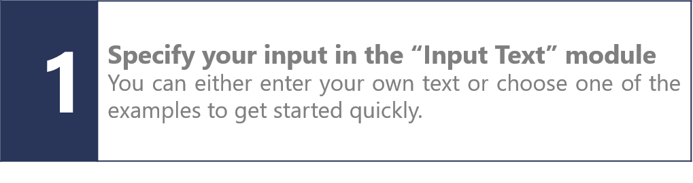
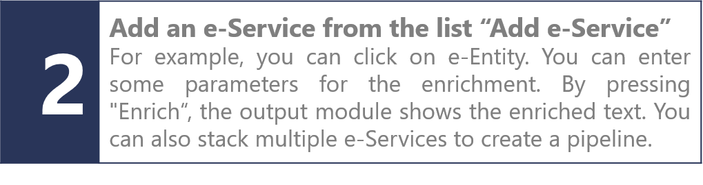
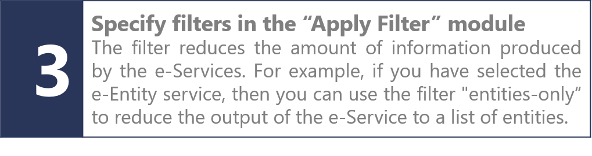

Some text
GETTING STARTED WITH THE FREME WORKFLOW EDITOR
Please follow these steps to set up your workflow and test available features of the FREME open framework of e-Services.
  INPUT TEXT
| Use Example | ||
| Specify input format |
ADD E-SERVICE
APPLY FILTER
Use a filter to simplify the output
| Filter |
FILTER "ENTITIES ONLY"